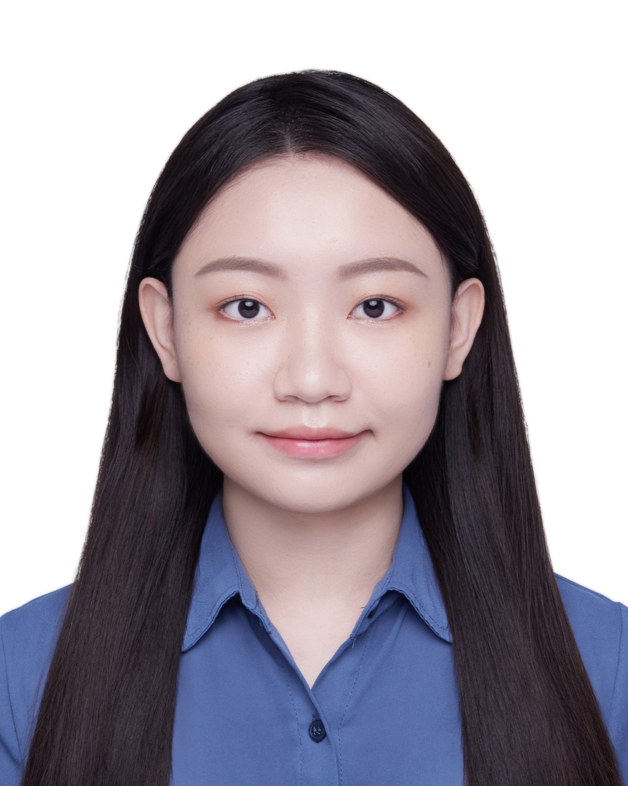

Cheng-Yun Wu (Yun)
Master Student | Research Assistant
Education
- Master: Institute of Information Management, National Taipei University (2024/09 - 2026/06)
- Bachelor: Department of Information Management, Ming Chuan University (2019/09 - 2023/06)
- High School: Taipei JingMei Girls High School (2016/09 - 2019/06)
Skills
- Python
- Java
- Chatbot
- Large language model (LLM)
- Retrieval-augmented generation (RAG)
- Agentic AI
Language
- Chinese
- English
About me
Hi, I'm Cheng-Yun Wu (Yun). I hold a Master's in Information Management from National Taipei University, where I worked as a research assistant at IFIT Lab building multimodal, RAG-enhanced dialogue systems and agentic AI applications. My work spans published research, competition-winning prototypes, and systems I've designed and shipped end-to-end.
ExperienceFor more details
-
Research Project:
-
Digital Support, Unimpeded Communication: AI-assisted Communication Assistive Devices
Sub-project 3: Multimodal Cross-lingual Task-Oriented Dialogue System
National Science and Technology Council (NSTC 113-2425-H-305-003-), 2023/05/01 - 2026/04/30
Position: Research Assistant, 2024/09 - 2026/07 -
ESG Sustainability Commitment Verification Competition and Annotation Data Collection Project (AI CUP 2026 VeriPromiseESG)
Position: Data Annotator, 2025/12 - 2026/02 -
Research on Speech Processing, Synthesis, Recognition, and Sentence Construction for People with Language Disabilities
Sub-project 3: Multimodal Cross-lingual Task-Oriented Dialogue System
Position: Research Assistant, 2024/09 - 2025/12
-
Digital Support, Unimpeded Communication: AI-assisted Communication Assistive Devices
-
Conferences
- 31st International Conference on IT Applications and Management, Jinju, Korea, 2025/10/26-30
- TWSC2 2025 (2025 Taiwan Symposium On Cloud And Services Computing), New Taipei, Taiwan, 2025/07/03-04
- NTCIR-18 (The 18th NII Testbeds and Community for Information access Research) Conference, Tokyo, Japan, 2025/06/10-13
- 2025 International Conference on Information Management, New Taipei, Taiwan, 2025/05/16
-
Competitions:
- North Taiwan University Alliance AI Agent Innovation and Entrepreneurship Interdisciplinary Competition: First Place, 2026/05/22
- 2025 NTPU USR Sustainability × Technology Proposal Competition (REsolution 再想解方): First Place, 2025/12/12
- NTCIR-18 MedNLP-CHAT: Medical Natural Language Processing for AI Chat, 2025/06/10-13, Japan
- 2025 The 10th TSC Marketing Symposium: AI Application Marketing Competition, Honorable Mention
- 2025 The 3rd NTPU AI Smart Application Innovation Competition: Practical Division, Excellence Award
- 2025 Best AI Awards, Final contest